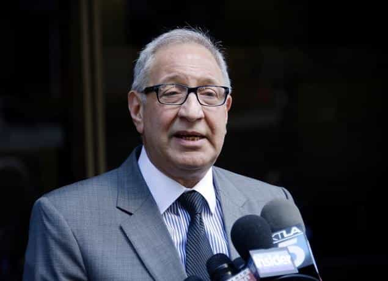
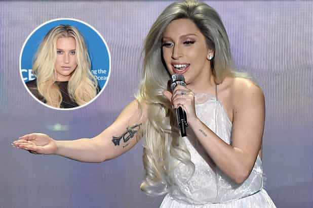

< < < Back
Kesha Receives Support From Big-Name Celebrities For A “Rape” She Said Never Happened – Return Of Kings
A judge has ruled against singer Kesha in her recent attempt to “free” herself from a contract with producer Dr. Luke (real name Lukasz Gottwald). Despite her 2011 deposition, made under oath, that Dr. Luke did not assault her, she has subsequently accused him of ten years of rape, including through drugs, and other serious physical abuse. In support of Kesha, dozens of well-known celebrities have called her a victim and Taylor Swift has even given her $250,000. Beyond that, hundreds of thousands have roared on Twitter and other mediums that the uncharged Dr. Luke is a “rapist” because Kesha says so.
When I first brought this story to you, things were bad enough. The mob mentality was out in force and there is no doubt that Dr. Luke was a lynching just waiting to happen. Now things have regressed to the stage where many of these celebrities, like singer Demi Lovato, have insisted that it is “gender equality” for a woman to be able to extricate herself from her “rapist” and a contract without evidence, not to mention a conviction or even a charge. If we took such a proposition to a logical conclusion, you should be able get out of your rental or home loan agreement based on your testimony, not what actual evidence you produce in a court of law.
Fanfare and logic-killing emotions aside, in 2011 Kesha incontrovertibly said that she had never had sex with Dr. Luke, let alone been raped by him. If Kesha is the victim of a decade of sexual and other abuse, explain this one:
The Daily Mail reveals, too, that Kesha filmed herself making this sort of denial. Do not expect Kesha’s supporters (more like, mindless zombies) to appropriately mention this *little* detail. Once again, we are accosted by hordes of people who want nothing a female does or says held against them later. A woman can indulge in whatever behavior or utter any statement she likes and she should never be held accountable for it if she radically changes her mind. Imagine the prospects of an accused rapist who admitted the crime and then reversed his plea. There would be no sympathy, regardless of any immoral or illegal pressure put on him to initially confess.
Many are criticizing that Dr. Luke posted parts of a TMZ report to show how Kesha’s story reversed itself. Well, my response to that is this: “Did CNN bother to break the story in such a dramatic way? No. The Huffington Post? No. The Guardian, The New York Times, or Chicago Tribune? Triple no.” Kesha has not denied she said these things and they were indeed her responses under oath.
If mainstream media outlets were interested in a fair and impartial reporting of events, not pro-feminist propaganda, at least one of them would have carried this as front page news. Dozens and dozens and dozens of world-recognized English-speaking dailies either did not know or chose to keep it under wraps. What we have here is confirmation bias at its finest: so-called journalists only looking for the stories and employing the angles they like and agree with.
Kesha’s lawyer falsely claimed Dr. Luke raped Lady Gaga and even she denied it

Mark Geragos, lawyer to Rihanna-hitting Chris Brown, convicted wife-killer Scott Peterson… and urine-drinking Kesha.
Kesha’s lawyer, Mark Geragos, had the hide in 2014 to allege that Dr. Luke raped Lady Gaga. Unfortunately for Geragos, Lady Gaga definitively squashed the accusation and said it never happened. Meanwhile, the celebrity attorney declined to either retract or apologize for the slandering. Geragos is just one of many moronically-mouthed individuals trying to stir up life-altering negative ramifications for Dr. Luke. Knowing full well he does not have a mere strand of hair to try and make a wig, Geragos should have been disbarred long ago for such behavior.
With or without Geragos’ involvement, the situation for Dr. Luke will nonetheless continue to spiral out of control. The hit squads have gone from brigades and divisions to full-blown armies, cementing a lifetime of mendaciously-produced notoriety for the innocent music producer. Sony has stuck by him so far, ignoring the shouts of “rape enablers!” from Kesha supporters, but the profound damage to his career has been done. Whether he has millions left in the bank or not (and we cannot be sure, really), no man of any financial or social standing deserves to have their name and reputation vindictively dragged through the sewers of ill-informed public rage.
A major reminder for readers
Would we be so sympathetic as a society to a man accused of rape who had drank his own urine? In fact, this would be used against him. Yet Kesha did that and also reversed her 2011 testimony denying she was raped. How credible does this make her?
In a number of my previous articles, I have opined about the reality that the media as a whole will not trouble itself to even start supporting due process and innocence before guilt until the biggest of holes appears in a girl’s story. Before that point, it is open season for press “coverage” and speculation that equates a rape allegation with an indisputable finding of fact. When outlets are proven conclusively wrong, most still do not bother to unambiguously correct the record, apologize profusely, and promise to make marked changes in how they report related claims in the future.
I welcome the use of any clear evidence disproving allegations of rape that have been fabricated. Yet this is not nearly enough, not by a long shot. Justice will not be served across the system until such time as men like Dr. Luke are afforded the basic rights the courts and political processes outside them insist they enshrine. Aside from the presumption of innocence and the idea that charges need to be laid quickly before public rape allegations are taken anything close to seriously, judges and juries need to start to apply the standard of proof for these cases that they would for other crimes.
If Dr. Luke had been accused of a violent burglary in Manhattan or L.A., 99% of the time the state, in order to get him convicted, would require something like DNA evidence, CCTV footage, recovery of the stolen goods at his home, or ten very consistent witness accounts of the same incident (i.e. not ten witnesses across ten crimes). Due to the fact that rape is invariably a private act (dispelling forever the idea of “rape culture”), courts have shamefully responded by gerrymandering the standard of proof demanded to produce more convictions, all while pretending it is still beyond reasonable doubt. For those who are not charged, like Dr. Luke, it is left to the public alone to convict using these farcically low thresholds for finding “guilt.”
Are you next?

“Why didn’t you say earlier that Lady Gaga supports Kesha’s rape allegations? They must be true then!”
Your story will not, as far as I know, reach the front page of newspapers and websites read or visited by millions of people. But you are at risk. In all likelihood, too, you will lack the kind of money that Dr. Luke may have retained to survive a lifetime of serious harassment and unemployability.
It is incumbent on all sane-minded men to contribute to reversing this totalitarian climate of witch hunts and social lynchings. Promising cases aside, things are in many ways getting worse. Facts and fair processes are being divorced from reality like never before. So start small and work your way up to help foster positive change. Dr. Luke is simply a more famous example of what countless men everywhere have gone through and will go through in the future.
Read More: Twitter Feminists “Convict” Singer Kesha’s Music Producer Of Rape